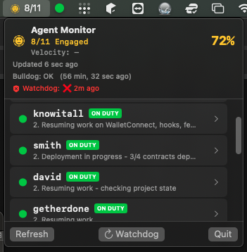

Monitor and control your AI agent fleet from the menu bar

Real-time fleet monitoring from your menu bar
Native SwiftUI app in your menu bar. Real-time status indicators show agent health at a glance.
Command-line interface for automation. List agents, send instructions, check status with simple commands.
Track agent activity with engagement percentages, token velocity, and progress history.
Auto-resurrection via launchd. If agents go down, the watchdog brings them back automatically.
Detect when agents need human attention. Question handling and instruction system built-in.
Designed to work with Clawdbot agent framework. Monitor your entire AI agent fleet from one place.
~/clawd/agent-registry.json# Clone the repository
git clone https://github.com/jlmalone/agent_monitor.git
cd agent_monitor/cli
# Install and link
npm install
npm link
# Start using
am list
am quickreport myagent "Working on task X"
am status myagentam list # List all agents with status
am ls # Alias for list
am status <alias> # Detailed status for one agent
am quickreport <alias> "message" # Update agent status (fast, atomic)
am instruct <alias> "message" # Send instruction to agent
am answer <alias> <qid> "text" # Answer a pending question
am logs <alias> # View progress history| Status | Color | Meaning |
|---|---|---|
| Active | 🟢 Green | Working, recent activity (<10min) |
| Idle | 🟡 Yellow | Running but no activity >10min |
| Blocked | 🟠 Orange | Has unanswered questions |
| Completed | 🔵 Blue | All tasks done, awaiting instructions |
| Error | 🔴 Red | Session crashed/errored |
| Offline | ⚪ Gray | No session found |
Create ~/clawd/agent-registry.json:
{
"version": "1.0.0",
"agents": [
{
"id": "unique-id",
"alias": "myagent",
"persona": "Description of agent role",
"mandate": "What this agent does",
"workDir": "~/projects/myproject",
"enabled": true
}
]
}Agents write state to ~/clawd/agents/<alias>/state.json
{
"agent": "MYAGENT",
"alias": "myagent",
"status": "active",
"currentAssignment": "Working on task X",
"lastActivity": 1706886000000,
"progress": ["Step 1", "Step 2"],
"questions": []
}Agent Monitor is designed to integrate with AI agent frameworks. See the Integration Guide for: